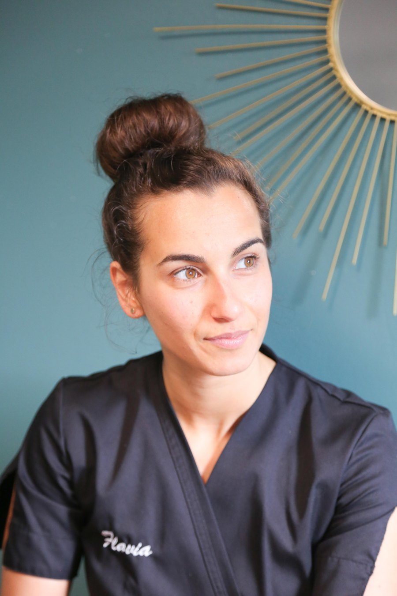

Mon parcours, en quatre dates
Psychomotricienne
Diplômée en psychomotricité, je travaille plus de deux ans auprès de nourrissons et jeunes enfants, en prévention et développement psychomoteur. Une rencontre autour du massage bébé sera ma révélation : le pouvoir du toucher.
Diplômée RNCP
Après une reconversion assumée et beaucoup de travail au sein de l'école Temana, j'obtiens le diplôme RNCP d'intervenant SPA Bien-Être, le socle technique de mes soins d'aujourd'hui.
HominiSens
Je lance l'aventure HominiSens, avec une conviction héritée de la psychomotricité : percevoir l'être humain dans sa globalité, physique et mentale.
Formatrice agréée
Je deviens en parallèle formatrice agréée : naissance d'HominiSens Formations, dont l'organisme sera certifié Qualiopi en 2025.
Vers le chemin du mieux-être…
Comment j'en suis arrivée à faire de mon quotidien votre bien-être ?
« Depuis toute petite, j'ai toujours aimé le contact avec les personnes de mon entourage. Je voulais même devenir kinésithérapeute pendant de longues années. J'ai d'ailleurs orienté mes études au départ en ce sens ! Mais vous connaissez la vie ! La vie est ainsi faite de rebondissements, de remises en questions, d'obstacles plus ou moins surmontables…
C'est ainsi que mon chemin s'est d'abord tourné vers la Psychomotricité, domaine paramédical qui m'a dotée de connaissances incroyables sur l'essence du corps humain. Diplômée en 2015, j'ai travaillé auprès de nourrissons et jeunes enfants dans le cadre de la prévention et du développement psychomoteur pendant plus de 2 ans. Durant ces années, j'ai rencontré une formatrice sur Paris avec laquelle j'ai appris le massage bébé. Cette rencontre fut pour moi une révélation, un instant singulier qui m'a rappelé à quel point j'aimais le pouvoir du toucher…
C'est après de longues réflexions sur ma vie professionnelle, mes besoins, mes états d'âme, que j'ai décidé de quitter mon poste et de repartir en apprentissage avec l'école de formation Temana. Et c'est avec beaucoup de travail, de sacrifices et surtout énormément d'envie de réussir que je fus diplômée RNCP en décembre 2018 en tant qu'intervenant SPA Bien-Être.
Bien évidemment, ma philosophie de travail dans le monde du bien-être s'est fortement inspirée de ma manière de percevoir l'être humain dans sa globalité, autant physiquement que mentalement, comme quand j'étais psychomotricienne. C'est pourquoi je mets un réel accent sur votre prise en charge qui pour moi se doit d'être entière, authentique et bienveillante.
Me voilà donc lancée depuis février 2019 dans l'aventure HominiSens et également en parallèle en tant que formatrice. Je partage ainsi mon emploi du temps en essayant chaque jour de pouvoir vivre sereinement de ces nouvelles activités professionnelles.
Je reste à votre écoute,
Au plaisir de se rencontrer un jour,
Flavia. »
Faisons connaissance
Un premier échange, tout simplement, pour un soin ou une formation.
Réserver un soin Découvrir mes formations 06 74 25 25 54